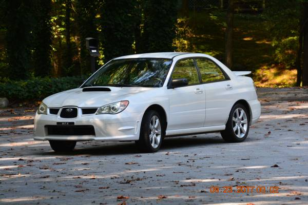
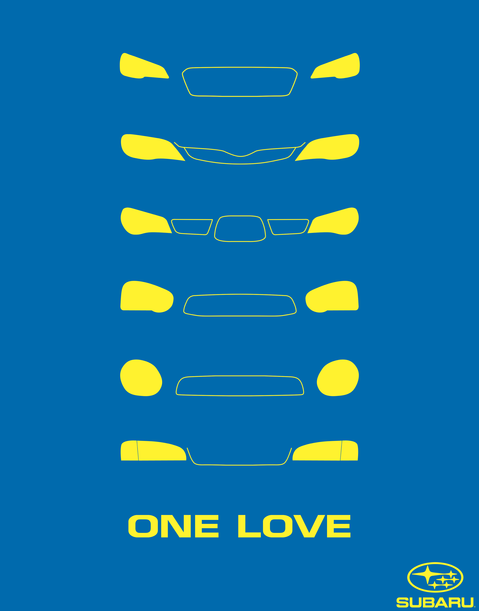
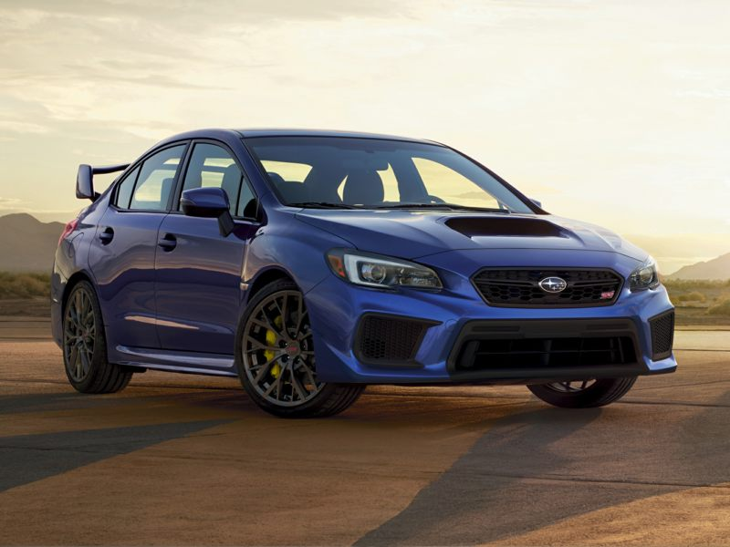

This is my personal favorite model year known as the "Hawkeye" Generation. It was produced from 2006 to 2007.
Other Variations of this car include the "Classiceye" , the "bugeye" , the "blobeye" , the "stinkeye" , and the "neweye."

Subaru ethusiaists can tell the difference between the model year of the car simply by glancing at the car's headlights!
This is only one of the many amazing sports cars to emerge from the Japanese Domestic Market or "JDM" from the 1990s and the 2000s.

The newest Subaru sports car is the WRX STI. For the newest generation, it was separated from the impreza chassis and instead evolved into its own chassis, the WRX.
The most famous Subaru is the Subaru 22B. It was created for its rally cross dominance in 1990's. Colin Mcrae helped Subaru dominate leading to Subaru creating a rally car for the streets.